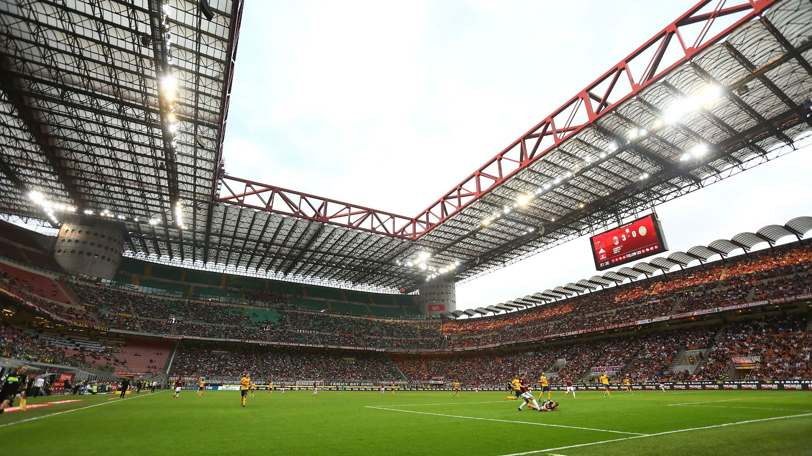

A.C.Milan
Associazione Calcio Milan commonly referred to as AC Milan or simply Milan, is a professional football club in Milan, Italy, founded in 1899. The club has spent its entire history, with the exception of the 1980–81 and 1982–83 seasons, in the top flight of Italian football, known as Serie A since 1929–30. AC Milan's 18 FIFA and UEFA trophies is the fourth highest out of any club (joint with Boca Juniors), and the most out of any Italian club. Milan has won a joint record three Intercontinental Cups and one FIFA Club World Cup, seven European Cup/Champions League titles Italian record, the UEFA Super Cup a joint record five times and the Cup Winners' Cup twice.With 18 league titles, Milan is the third most successful club in Serie A, behind local rivals Inter Milan 19 league titles and Juventus (36 league titles). They have also won the Coppa Italia five times, and the Supercoppa Italiana seven. Milan's home games are played at San Siro, also known as the Stadio Giuseppe Meazza. The stadium, which is shared with city rivals Internazionale, is the largest in Italian football, with a total capacity of 75,923. They have a long-standing rivalry with Inter, with whom they contest the Derby della Madonnina; it is one of the most followed derbies in football. The club is one of the wealthiest in Italian and world football. It was a founding member of the now-defunct G-14 group of Europe's leading football clubs as well as its replacement, the European Club Association.
